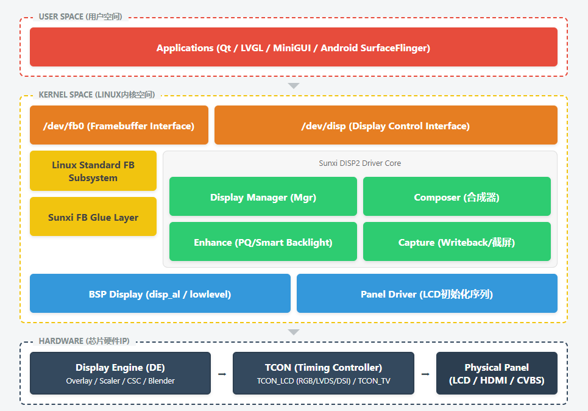
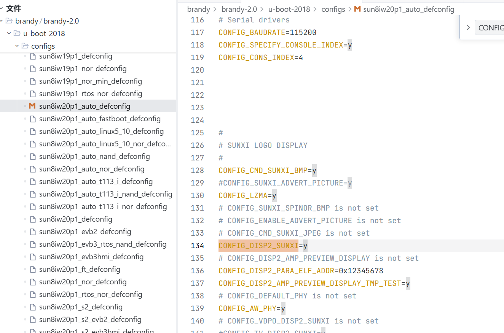
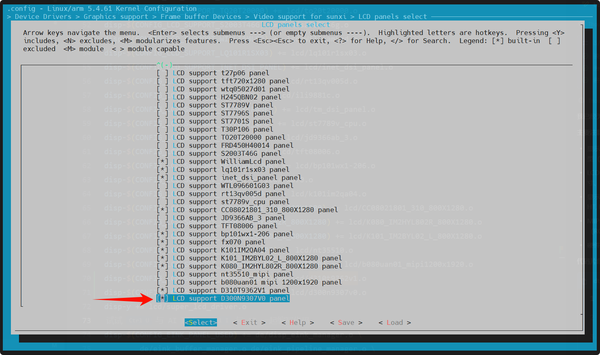
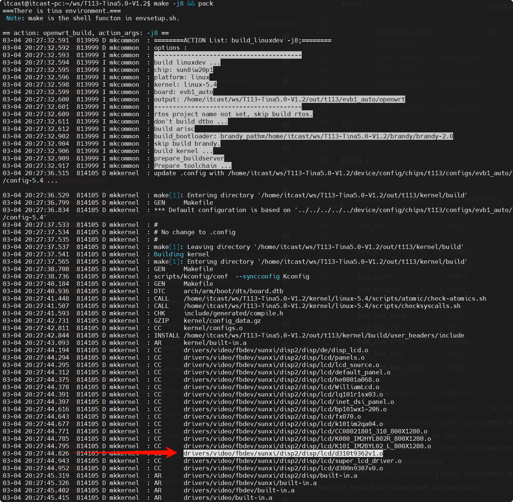
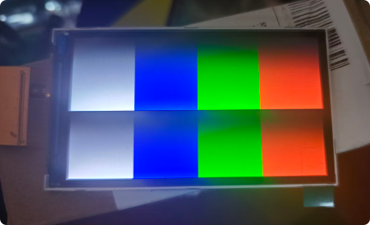

9.linux系统开发-mipi屏幕移植
MIPI 屏幕移植确实是嵌入式 Linux 领域里公认的“硬骨头”。放在以前，这绝对是只有拿高薪的资深底层驱动工程师（5-10年经验）才敢碰的活儿。
但现在，有了系统化的思维加上大模型的辅助，我们完全可以把这个“黑魔法”降维成一套“填表套路”！只要掌握了这套标准化流程，哪怕是零基础的小白，也能把各种乱七八糟的屏幕点亮。
为了配合这节“造物主级别”的硬核课程，我们的课件依然采用纯白底色的手绘插画，把复杂的驱动分层和硬件争用原理变成直观的漫画。
关于MIPI屏
MIPI 是 Mobile Industry Processor Interface 的缩写，中文全称为“移动行业处理器接口”。
它是由 MIPI 联盟（MIPI Alliance）制定的一系列接口标准，旨在为移动设备（如手机、平板）提供标准化、低功耗、高性能的硬件接口规范。
MIPI屏是指采用MIPI DSI（Display Serial Interface）接口标准的显示屏。它并非指屏幕材质（如LCD或OLED），而是指屏幕与主控芯片之间的一种高速串行通信协议。
简单来说，MIPI屏就是通过极少的几根线（通常1组时钟线+1-4组数据线），以“打包快递”的方式高速传输图像数据，是目前智能手机、平板电脑及高端嵌入式设备中最主流的屏幕接口。
核心特点：为什么它如此受欢迎？
- 高速传输：采用差分信号技术，单通道速率可达1.5Gbps以上，多通道并行可轻松支持4K高清显示，满足高刷新率需求。
- 低功耗：支持双模式切换。传输图像时进入高速模式（HS），平时待机或传输指令时自动切换到低功耗模式（LP），非常适合移动设备。
- 引脚少：相比传统的并行接口（RGB）需要几十根线，MIPI接口通常只需4-10根线，大大简化了硬件布线和FPC（柔性电路板）设计，有利于设备小型化。
- 抗干扰强：差分信号对共模噪声有天然的抑制作用，信号传输更稳定。
工作原理：它是如何工作的？
MIPI屏的工作机制可以类比为“快递系统”：
- 打包数据：主控芯片（如手机SoC）将图像数据和控制指令按照MIPI DSI协议打包成数据包，并加入校验码（CRC）。
- 智能传输：通过物理层（D-PHY）的差分线缆传输。传输图像时走高速通道（像开跑车），传输指令时走低速通道（像骑自行车），实现动态功耗管理。
- 屏幕驱动：屏幕端的驱动IC接收数据包，解包后驱动像素点发光，最终显示出图像。
常见接口类型对比
接口类型 | 传输方式 | 特点 | 适用场景 |
MIPI DSI | 串行差分 | 高速、低功耗、引脚少 | 智能手机、平板、高端嵌入式屏 |
RGB (并行) | 并行传输 | 接口简单、成本低 | 早期功能机、低端工控屏 |
LVDS | 差分信号 | 抗干扰强、传输距离稍长 | 工业控制屏、车载屏 |
SPI | 串行传输 | 引脚极少、速度慢 | 小尺寸黑白屏、低分辨率屏 |
核心思想：分层与抽象
显示驱动的三层结构是典型的Linux内核驱动架构思想，其核心是 “分层”与“抽象” ，目的是让代码易于维护、扩展和复用。

关uboot的显示
1. U-Boot 是什么？
简单来说，U-Boot 是一个引导加载程序。
想象一下电脑开机过程：
- 1.按下电源键，主板固件（BIOS/UEFI）最先启动，进行硬件自检。
- 2.BIOS/UEFI 然后从硬盘上找到并加载 Windows 或 Linux 系统的启动文件。
- 3.控制权交给操作系统，你才看到登录界面。
在嵌入式Linux系统（比如手机、平板、智能电视、开发板）中，U-Boot 就扮演着 BIOS 和启动管理器的角色。
它的核心工作是：
- •初始化最关键的硬件：如CPU、内存、时钟、存储设备（eMMC、SD卡）。
- •从存储设备（或网络）加载操作系统内核：把Linux内核的镜像文件从存储设备读到内存里。
- •将控制权交给内核：跳转到内核在内存中的地址，启动Linux系统。
- •提供简单的调试命令行：在启动前可以按按键进入U-Boot命令行，进行刷机、测试内存等操作。
2. 为什么U-Boot也要管显示？
U-Boot本身的目标是启动内核，它并不需要一个华丽的图形界面。但显示对它来说在两种场景下很有用：
- 1.展示启动Logo或信息：在Linux内核完全启动前，在屏幕上显示一个公司的Logo或简单的启动进度条，提升用户体验。
- 2.调试与开发：当内核的显示驱动无法工作时，如果U-Boot能点亮屏幕，就能证明屏幕本身、接线、电源、基础配置是好的，问题一定出在内核驱动上。这能极大地缩小问题排查范围。
所以，U-Boot内部也包含了一套简化版的显示驱动。
3. 核心问题：为什么调试MIPI屏幕时要先关闭U-Boot的显示？
这是最关键的一点，原因主要有两个，都与 “硬件资源争用” 有关。
原因一：对显示硬件的“独占式”访问
显示系统是一个非常复杂的硬件系统，主要包括：
- •显示控制器（Display Controller）：位于主芯片内部，负责生成图像信号。
- •MIPI DSI主机控制器（MIPI DSI Host Controller）：将显示控制器传来的图像数据打包成MIPI DSI协议的数据包。
- •屏幕端的MIPI DSI接收器：接收数据包并解码，最终驱动液晶像素。
这些硬件资源（寄存器）在某一时刻只能被一个“主人”配置和控制。
- •情况A（不关U-Boot显示）：
- 1.U-Boot启动，它按照自己代码里的配置，初始化了显示控制器和MIPI DSI主机，点亮屏幕显示Logo。
- 2.U-Boot完成任务，将控制权交给Linux内核。
- 3.Linux内核开始启动，它的显示驱动（比如DRM驱动）也试图去初始化显示控制器和MIPI DSI主机。
- 4.问题来了：内核驱动会发现这些硬件处于一个“已经被初始化”的未知状态。它可能无法正确读取当前状态，或者在进行初始化配置时与U-Boot留下的配置产生冲突，导致初始化失败。结果就是屏幕闪一下（U-Boot Logo消失）然后黑屏或出现乱码。
- •情况B（关闭U-Boot显示）：
- 1.U-Boot启动，它跳过了显示相关的初始化，所有显示硬件保持在上电后的默认复位状态。
- 2.U-Boot将控制权交给Linux内核。
- 3.Linux内核的显示驱动开始工作，它面对的是一块“干净”的、未被触碰过的硬件，可以按照驱动代码的预期，从头到尾、一步一步地进行初始化。
- 4.结果：内核驱动能够完全掌控硬件，成功点亮屏幕的几率大大增加。
原因二：方便内核驱动的调试和信息输出
当内核显示驱动初始化失败时，你需要知道失败的原因。如果U-Boot已经点亮了屏幕，内核驱动可能会在输出调试信息时干扰到现有显示，或者因为硬件状态混乱，连错误信息都无法正常打印到串口日志中。
关闭U-Boot显示，让内核驱动从一个“干净”的状态开始，这样当它出错时，通过串口工具看到的内核日志将是清晰、连续的，能够准确指出是在初始化哪个步骤（如配置PLL时钟、设置时序、发送初始化序列）时出了问题。
总结
你可以把U-Boot和Linux内核想象成两个都要用同一台投影仪（显示硬件）做演讲的人。
- •不关U-Boot显示：U-Boot讲完后，不关投影仪也不复位，直接让Linux内核上台接着讲。Linux内核可能发现投影仪的设置（分辨率、输入源）不对，在切换时很容易把场面搞乱，导致演讲失败。
- •关闭U-Boot显示：U-Boot讲完后，把投影仪关掉，恢复默认设置。Linux内核上台后，自己从头打开投影仪并进行设置。这样整个流程是完全可控的，成功率高。
因此，关闭U-Boot显示是为了给Linux内核一个“干净”的硬件初始状态，避免潜在的配置冲突，这是驱动调试中一个非常重要的隔离问题的手段。
找到
/root/T113-Tina5.0-V1.2/brandy/brandy-2.0/u-boot-2018/configs/sun8iw20p1_auto_defconfig
将CONFIG_DISP2_SUNXI=y 注掉

这样uboot启动阶段就不会再开启屏幕显示了。
LCD驱动比较简单，各种模板案例都在linux内核中，
[codeblock]移植流程
添加驱动文件
打开目录：kernel/linux-5.4/drivers/video/fbdev/sunxi/disp2/disp/lcd/
创建文件d300n9307v0.c 和d300n9307v0.h
添加编译配置
在 Kconfig 末尾添加
在 panels.c 的 136 行添加
在 panels.h 的 176 行添加
在../Makefile 文件的 70 行添加
这里注意：Makefile在上一级目录里
原码准备好了，但是这就可以了吗？源代码真的参与工程的编译了吗？
开启编译配置
执行命令 make kernel_menuconfig 路径如下：
Device Drivers -> Graphics support -> Frame buffer Devices -> Video support for sunxi -> LCD panels select
选中 LCD support D300N9307V0 panel 后按下 Y

设备树配置
重点关注 &disp 和 &lcd0
编译烧录测试
执行编译打包
[codeblock]可以看到驱动编译结果

在设备命令行里执行
[codeblock]: 查看当前显示系统的状态，包括分辨率、帧率等 , 输出如下说明正常。
[codeblock]测试屏幕命令
[codeblock]: 显示彩条。如果能显示彩条但系统UI黑屏，说明问题出在上层，而不是底层驱动。如果彩条也无法显示，就是底层驱动的问题。

LVGL示例程序
配置lvgl的demo
功能开启
make menuconfig
Gui > Littlevgl 按"Y"勾选lvgl_examples
相关文件路径
源代码及lvgl配置：platform/thirdparty/gui/lvgl-8/lv_examples
编译打包安装配置：openwrt/package/thirdparty/gui/lvgl-8/lv_examples/Makefile
U-boot移植
屏幕亮了之后，移植U-BOOT
内核设备树
路径：/root/T113-Tina5.0-V1.2/device/config/chips/t113/configs/evb1_auto/uboot-board.dts
源代码
U-BOOT的内核 结构体和linux内核有细微差异。所以代码要修改
路径: brandy-2.0/u-boot-2018/drivers/video/sunxi/disp2/disp/lcd
同样创建文件d300n9307v0.c 和d300n9307v0.h
- 修改文件
d300n9307v0.c
- 修改文件
d300n9307v0.h
同样 kconfig增加索引
Kconfig 文件
panels.c 添加结构体
panels.h 添加头
上一级../Makefile文件 增加编译控制
开启功能
最后要记得在/root/T113-Tina5.0-V1.2/brandy/brandy-2.0/u-boot-2018/configs/sun8iw20p1_auto_defconfig
找到 U-Boot 所使用的 defconfig 文件，增加一行
[codeblock]
然后取消注释 之前的 CONFIG_DISP2_SUNXI=y
编译烧录
[codeblock]最后烧录
开机看到linux小企鹅。
修改成自己的Logo
在线图片编辑: https://www.photopea.com/
导出成24位bmp格式图片即可(建议宽度在240px以下)
直接替换SD卡盘里的bootlogo.bmp即可
永久替换
刚刚SD卡盘里的方案是临时替换，重新烧录固件后，Logo又会恢复原样。这个图片一定是在源码里就有的。通过find命令，我们找到文件的路径：openwrt/target/t113/t113-common/boot-resource/boot-resource/bootlogo.bmp，替换成自己想要的即可
以下命令为从当前目录及子目录查找大小在30K-40K之间, 名为 bootlogo.bmp的文件:
开发流程
☀️ 上午：看透屏幕驱动的本质与“抢夺投影仪”
第 1 节课：屏幕是怎么亮起来的？（驱动分层降维）
- 痛点引入： 很多人一想到要写几千行的屏幕驱动就头皮发麻。其实根本不用我们从零写！Linux 内核采用了极其优雅的“三层架构”思想。
- 降维类比（Web 后端架构）：
- 底层（硬件层）： 就像
DataAccess数据库访问类，只管极其底层的读写硬件寄存器（翻译官）。 - 框架层（DRM/Framebuffer）： 就像
Service业务逻辑类。Linux 社区已经把多图层叠加、色彩转换的标准动作写好了，我们直接 拿来用！ - 驱动层（用户接口）： 就像对外提供的
ControllerAPI（比如/dev/fb0），让上层 APP 可以方便地调用。
- 定心丸： 告诉学生，我们做屏幕移植，不需要碰复杂的框架层，只需要去底层“填个参数表”就行了！
第 2 节课：为什么要先“蒙住 U-Boot 的眼睛”？
- U-Boot 认知： U-Boot 就像是电脑的 BIOS，负责拉起 Linux。为了开机体验，它通常会先在屏幕上显示一个 Logo。
- 痛点（致命踩坑）： 为什么我们在调试新屏幕时，必须先把 U-Boot 的显示功能关掉？
- 投影仪类比： U-Boot 和 Linux 内核就像是两个要在同一台“投影仪（显示硬件）”上做演讲的人。
- 如果 U-Boot 讲完不关投影仪，Linux 上台后，面对一个已经被设置得乱七八糟的机器，很容易配置冲突，导致黑屏。
- 正确做法： 让 U-Boot 闭嘴（关闭显示）。Linux 内核上台后，面对一个纯净的、刚通电的硬件，从头开始初始化，成功率极高！
- 实操动作： 打开
/root/T113-Tina5.0-V1.2/brandy/brandy-2.0/u-boot-2018/configs/sun8iw20p1_auto_defconfig，把CONFIG_DISP2_SUNXI=y注释掉。给内核一个干净的舞台！
🌤️ 下午：CV 工程师的最高境界（移植实战）
第 3 节课：偷梁换柱（抄袭原厂模板）
- 核心动作： 所有的内核源码里都有一堆写好的模板。我们进入
kernel/linux-5.4/drivers/video/fbdev/sunxi/disp2/disp/lcd。 - 复制粘贴： 找到
ST7701s.c，复制一份改名为d310t9362v1.c，打开后全局替换名字！ - 埋地雷（日志确认法）： 在最重要的初始化函数
lcd_panel_init里面，加上一句pr_emerg("!!!!!!!!!!!! zzh: lcd_panel_init !!!!!!!!!!!!\n");。告诉学生，如果在开机日志里看到了这句话，说明我们的代码真正被执行了！
第 4 节课：点屏核心 —— 翻译“天书”（初始化序列）
- 痛点： 屏幕厂家会丢给你一份极其难懂的初始化代码。怎么放进 Linux 里？
- 解密
LCM_setting_table： 告诉学生，这就是个简单的“填表游戏”。
- 比如厂家要求先发个
0x11指令，那就填：{0x11, 1, {0x00} }。 - 要求延时 120 毫秒，就用到我们定义的特殊标志位：
{REGFLAG_DELAY, REGFLAG_DELAY, {120} }。 - ⚠️ 经验避坑： 特别指出
0x3A这个寄存器。如果是 RGB565 就填0x55，如果是 RGB888 就必须填0x77。这是导致花屏的重灾区！
第 5 节课：让系统认识你的屏幕（注册与设备树）
- 实操动作 1（Kconfig 与 Makefile）： 教大家怎么在这两个文件里增加
CONFIG_LCD_SUPPORT_D310T9362V1，并把它挂载到panel.c里。这就相当于去派出所给新屏幕上了个户口。 - 实操动作 2（设备树填空）： 打开
board.dts，配置&lcd0。
- 不讲高深时序，只讲大白话：
lcd_x和lcd_y是分辨率，lcd_dclk_freq是像素时钟，lcd_dsi_lane = <2>告诉芯片我们用了几根 MIPI 数据线。
第 6 节课：终极点亮与“彩条护体”（硬件排错法）
- 点菜单编译：
make kernel_menuconfig-> 选中我们的新屏幕 -> 编译烧录。 - 高光测试（极其硬核的企业级排错）：
- 刚烧完，如果系统 UI 还没起来是黑屏怎么办？怎么证明我们的底层驱动写对了？
- 祭出终极命令：
echo 1 > /sys/class/disp/disp/attr/colorbar - 见证奇迹： 敲下回车的瞬间，屏幕上立刻显示出极其鲜艳的标准测试彩条！
- 降维结论： 告诉学生：“只要彩条出来了，底层屏幕移植 100% 成功！后面如果黑屏，绝对是上层 UI（比如 LVGL）没配好，别去瞎改底层代码了！”
🌙 晚自习：打通任督二脉（U-Boot 同步与第二块屏）
第 7 节课：填平坑洼（U-Boot 的微小差异）
- 痛点： 内核点亮了，但我们开机的时候前面十几秒还是黑的。我们要把代码同步给 U-Boot。
- 实操： 把写好的
.c和.h文件复制到 U-Boot 对应的目录里。 - 细节避坑： 告诉学生，U-Boot 和 Linux 内核并不是完全一样的孪生兄弟。U-Boot 里的结构体去掉了
struct关键字（比如要改成__lcd_panel_t和panel_extend_para）。修改、加宏、开启之前关闭的CONFIG_DISP2_SUNXI=y，编译烧录。 - 成就达成： 一按电源，秒出企鹅 Logo！
第 8 节课：举一反三（适配另一块屏幕）
- 巩固验证： 拿出那块 480x854 的 D300N9307V0 屏幕。
- 快速通关： 演示只需要更换
LCM_setting_table里的数据，修改设备树里的分辨率（854）和时序参数，其他框架代码一字不改，再次成功点亮！ - 升华： “看！这就是套路的威力！掌握了这个框架，以后不管遇到哪家厂的 MIPI 屏幕，对于你们来说，都只是一次熟练的‘填表’工作！”